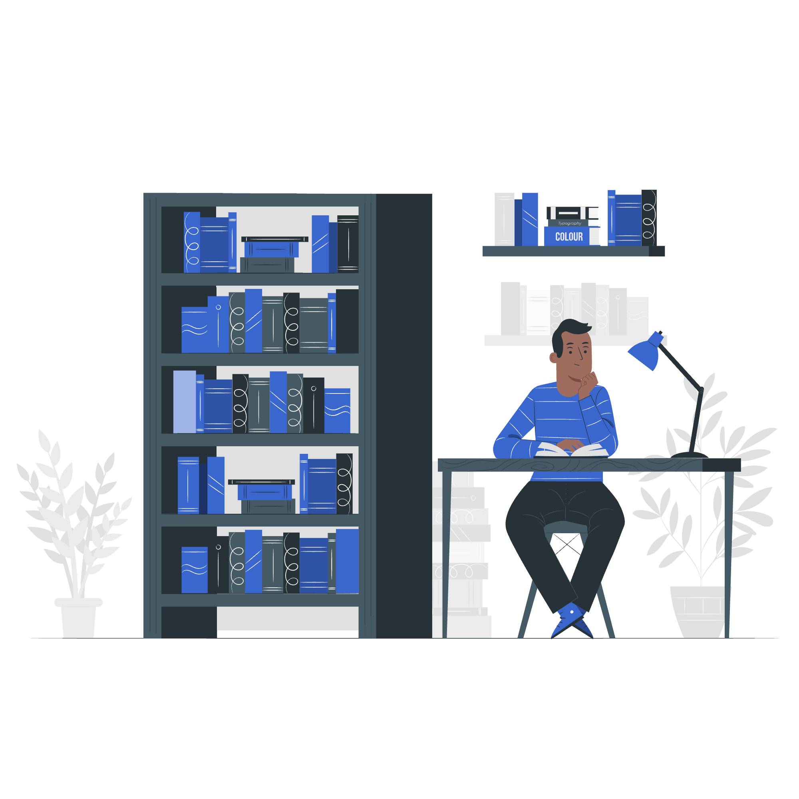

مرحباً بك في المنصة الطبية
رفيقك الأمثل في السنة التحضيرية — كل ما تحتاجه من ملفات وملاحظات وأهداف في مكان واحد.

مكتبة شاملة بين يديك
كتب، ملخصات، مراجع، وبحث فوري في 5 مواد أساسية مع إمكانية تحميل كل شيء.
اقرأ بدون إنترنت
حمّل الملفات مرة واحدة، وافتحها في أي وقت ومكان بدون اتصال — بسرعة فائقة.

نظّم دراستك بذكاء
ملاحظات شخصية ومشتركة، أهداف دراسية يومية، وتتبع تقدمك خطوة بخطوة.